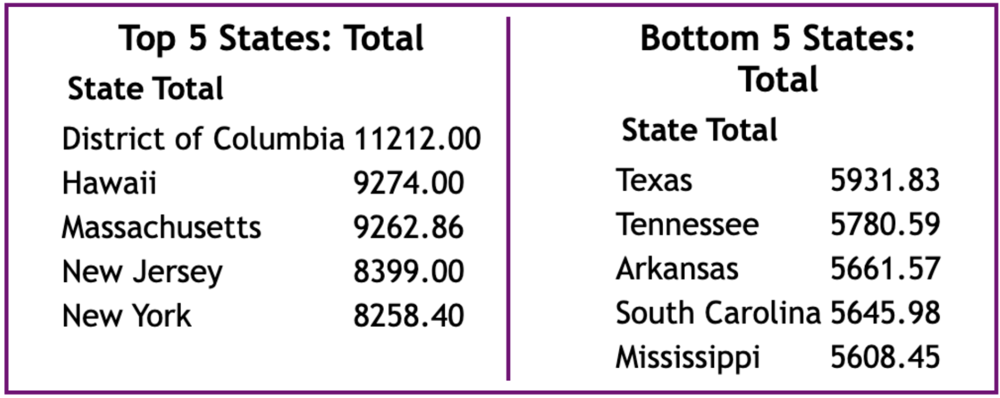

Data Source & Processing:
The dataset we used for this project is sourced from Kaggle, titled “US Cost of Living Dataset”
(2022). This was pulled from the Economic Policy Institute, a non-profit think tank that
conducts research on the U.S. economy. We selected this dataset because it came from a
reputable source and consolidated an impressively wide range of data, with variables including
state, metropolitan status, area name, county, family member count, and median family income.
Most importantly, this dataset included annual costs of housing, food, transportation,
healthcare, childcare, and taxes.
After retrieving the data from the source, we initiated data processing preceding
visualizations. Our initial step involved selecting columns exclusively featuring monthly
costs by filtering out yearly cost data. For better data extraction in the Javascript
environment, we created a new column containing the full state name instead of state
abbreviations. With all numeric columns formatted as strings, we proceeded to convert them
into float types. For geospatial accuracy in the map visualization, ‘state_id’ column was
created based on the state’s FIPS code.
Since the purpose of our visualization was to discern each state’s cost of living by family
size, we grouped by ‘State’ and ‘Family’ columns. It averaged the cost of living data within
the same state and family size, excluding irrelevant columns like ‘Areaname’ and ‘County’ to
streamline the visualization.
Design Rationale:
For our first visualization, we decided to create a choropleth map of the United States to
display the variation in different types of living costs, as it would allow users to easily
compare how costly it is to live in each state in terms of different expense types.
For our second data element, we created two tables: one that displays the top 5 most expensive
states for a given cost category, and one that displays the bottom 5 least expensive states.
We decided to create this in order for users to have a quick and easy takeaway from our
dashboard without having to select multiple states in order to compare their costs of living.
We ultimately designed this table to be rather minimalistic: the title, “Top 5 States:
[Cost Type]” informs users on exactly what data they are viewing, followed by a list of the
state names and their average cost for that expense.
For our third visualization, we implemented a bar chart that displays the breakdown of
expenses for a specific state. The default state is New York, and users can select any state
on the map to view its breakdown.
Interactivity Elements & Rationale:
Map Filtering
The map was focused around cost type and family size as shown in the buttons on top of the map chart.
Map Hovering
To enhance the user’s interactivity experience, we included additional interactive elements in the map. This allows the user to efficiently depict the state-specific data that they want to view.
Table
Aside from the choropleth map, we introduced a table that dynamically showcases the top 5 and bottom 5 states for each cost of living category and family size. While visualizing the distribution of cost of living ranks across states is useful in and of itself, the inclusion of tables adds a quantitative dimension by presenting specific numerical values. This not only offers users a tangible understanding of the range deemed as high or low in cost of living but also provides an intriguing element where users can identify whether their state falls within top or bottom 5, adding a personalized touch to the exploration of this data.
Bar charts
Along with the tooltip as the interactivity on the map, we included a bar chart of detailed state cost of living when the states are clicked.
The Story:
Through this project, we wanted to tell a comprehensive story about the cost of living in the United States. By allowing users to filter the visualizations by cost category and family size, they are able to “customize” this story to show exactly what they are curious about.
Without selecting any filters, the initial “story” that our visualization tells us is that states with the highest total cost of living are located on the east and west coasts of the country, in states like California, Oregon, New York, New Jersey, and Hawaii— users can confirm this is true by looking at the table to the right, which lists the 5 most expensive US states to live in. New York, the default state used for the state-specific bar chart, has a uniquely high cost of childcare, with its other costs approximately the same save for average food costs.
Utilizing the various filters available to the users, the visualization offers valuable insights into how states vary based on the different living expenses and family sizes. With the cost filters, users can identify patterns indicating that states with high living costs are often clustered together geographically. For example, the healthcare category of the visualization tells us that the Midwest and Southeast regions encompassing South Dakota, Nebraska, Missouri, Illinois, Louisiana, and Mississippi have the highest healthcare cost of living. On the other hand, when focusing on transportation, users can discern that states in the Western regions - Utah, California, Nevada, Colorado, and Wyoming - display the highest cost of living in this category.
Applying family size filters, users can view a dynamic representation of how the cost of living evolves with increasing family size. Comparing the taxes based on the family sizes, users can view that the state ranking of costs changes for each family configuration. For families with 2 parents and 0 children (2p0c), regions such as Montana, Wyoming, and Utah are situated in the middle of the ranking, with average annual taxes totaling less than $573.06. However, as the family size increases to 2 parents and 4 children (2p4c), those same regions rise in the rankings by surpassing $896.74 in taxes.
We acknowledge that this visualization has the potential to include much more information for users. If we were to expand on this project, one of the first additions would be on the bar chart, where we would add functionality that allows users to select multiple states to compare their respective cost breakdowns against each other. Alternatively, it could be helpful to show the national median costs for each category to compare to the selected state. Adding a hover functionality to the bar chart could also be helpful in showing the exact cost values for each bar.